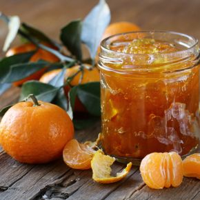

”
Gyömbéres narancs-mandarin lekvár
A Natur Projekt elkészítési javaslata:
Lekvár főzés: Panasonic kenyérsütő- és lekvárfőző géppel
Hozzávalók:
- 1 kg mandarin (kb. 6 db)
- 1 kg narancs (kb. 4 db)
- 2 cm reszelt, hámozott gyömbér
- 4 db szegfűszeg
- 1 csomag dzsemfix, adagolás a rajta szereplő leírás alapján (elhagyható)
- 40 g cukor
Elkészítés:
Megpucoljuk a mandarinokat, és 2 narancsot. A másik kettő narancsnak kinyomjuk a levét. Az összes hozzávalót bekészítjük a Panasonic kenyérsütő és lekvárfőző gépbe, és elindítjuk a lekvárfőző programot. Az időzítést 1 óra 50 percre állítjuk.
A házi lekvár és a házi kenyér kiváló párosítás. Mindkettőt elkészítheti a Panasonic kenyérsütő és lekvárfőző gépében!